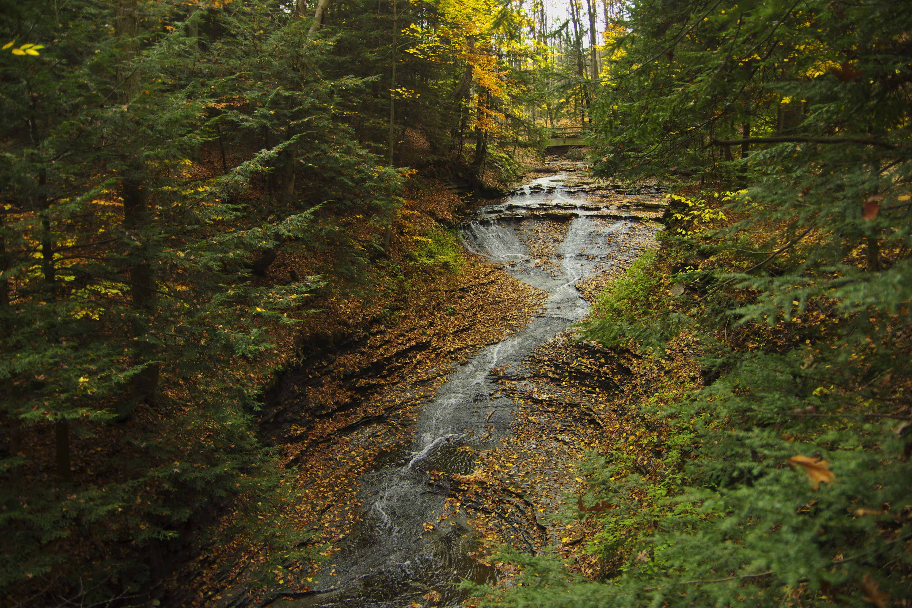
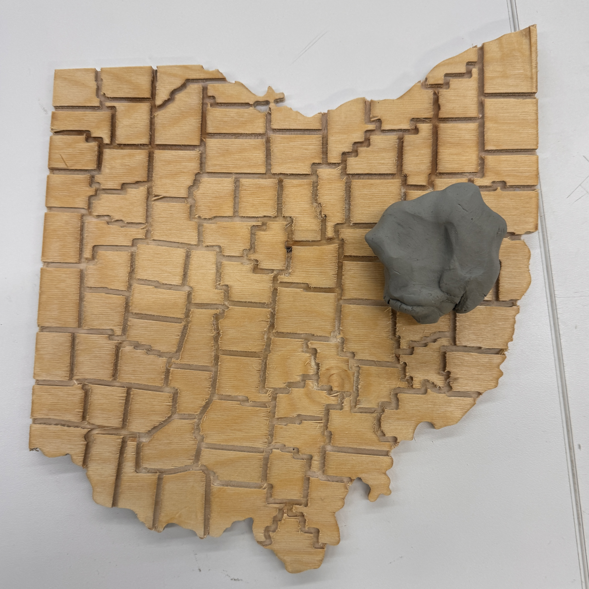
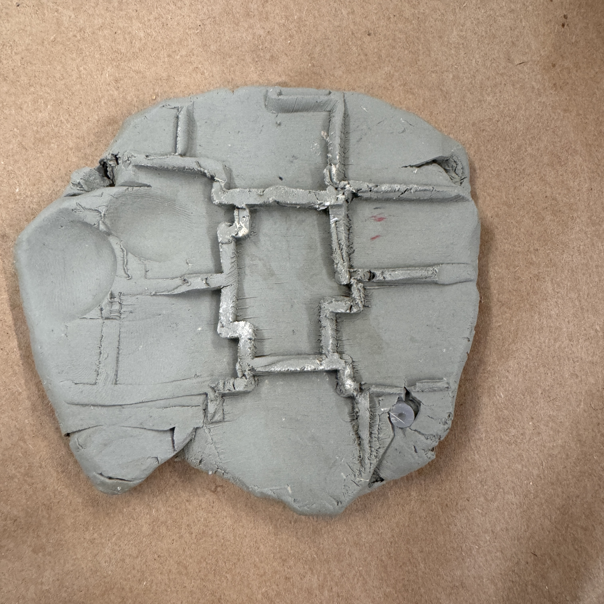
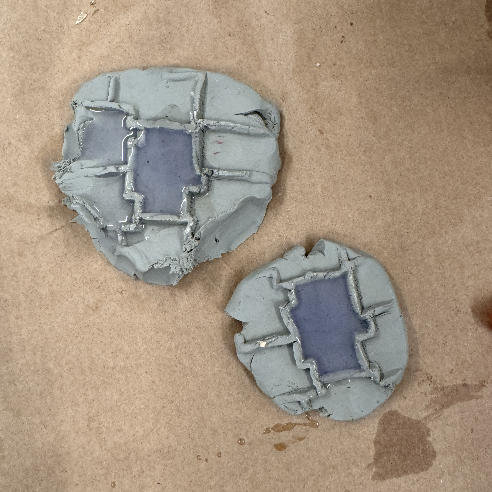
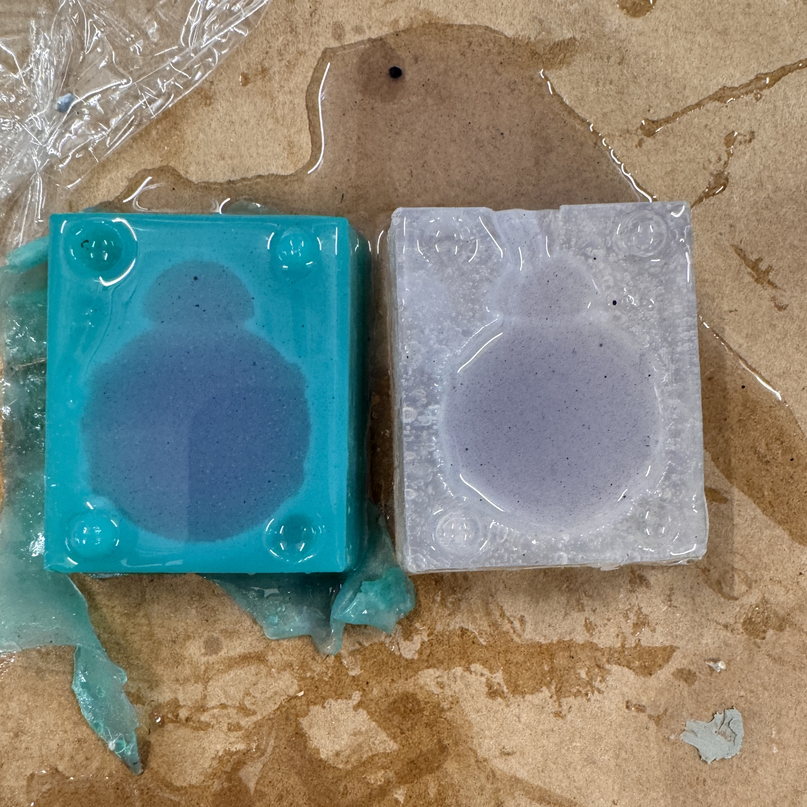
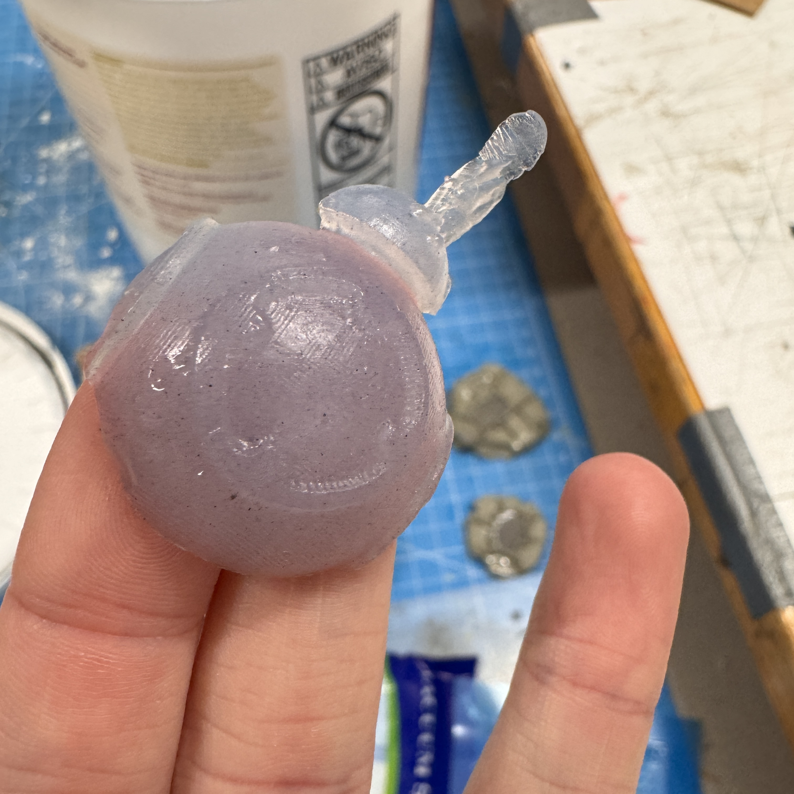
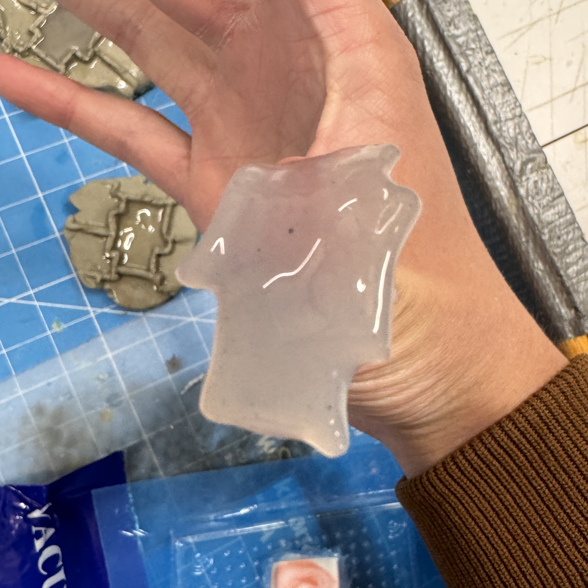

Week 8: CNC Milling

Assignment: Make Something With CNC
Overall, I think I would describe my work this week as disappointing. This is one of the weeks that I was most excited for coming into the class because I had never used a CNC machine before, and they seemed so awesome. Combine that with the plethora of materials that the shop has in stock, I really wanted to make something cool and not basic for this week. With that in mind, I set out on making a real-life pokeball. I wanted to do this for the molding and casting component of this week because layer lines on a sphere look unappealing to me, so sanding it down a bit before casting it in a more easily rounded material like acrylic or epoxy sounded very appealing to me. I wanted to add a servo that opens and closes the ball upon the click of a large, silver button on the front, and a second servo to act as a shaking mechanism to mimic the in-game mechanics. If I had time, I wanted to add other features like sound, but the first goal that I wanted to achieve for this week was to just get a pokeball molded and casted and install the button that would light up when clicked. This seems very reasonable in a vacuum, but this is the last week of my thesis, and I am in a bit more of a crunch time than I realized. After being paralyzed with indecision for over an hour, I talked it through with Bobby and realized that this might be too much of a stretch goal to accomplish this week. I felt upset that I spent so much time planning this project, only for it to fall through before it even really started. I still ended up printing out the pokeball on the 3D printer in hopes that I will have time after my thesis is done to realize my dreams. Here is a picture of the parts in the prusa slicer before being put onto the printer:
This was designed so that the outer shell could be cast in a different material, but the inner shell will still be 3D printed to allow for faster prototyping and ease of affixing electronics and stuff to it. To try to take a win after scrapping this idea for this week, I wanted to try to mill out my idea for the CNC part of this assignment. I really want to make my parents a nice decoration since they recently moved, and I think it would be a nice housewarming gift. My original idea was a map of Ohio with the county names on it because it seems like something they would like, and I found
this map online. It didn't have all of the county names, but I was able to add those in Fusion. Unfortunately, upon loading up the DXF file into Aspire, Bobby and I realized that the county names would likely be too small to cut out, so I went back and deleted all of the names that I had just put in. I think what I will eventually do is get a larger, nice piece of wood and maybe a smaller end mill, or I will just mill out the boundaries and use the laser cutter to engrave the county names. I will definitely do more testing first to ensure that I can do this with minimal splintering and with some more precision. Regardless, I did cut out the county boundaries and the outline of the state itself for this week's project.
After a brief sanding on the belt sander and a quick finish with a mystery finish from the closet, and I was happy enough with how this first pass turned out. I then had to tackle the unresolved lack of casting ideas issue. I was again paralyzed by indecision for another hour, spending time seeing if I could quickly 3D print something or convert STLs I found online into DXF files for the CNC, bouncing around from random pieces I found in the lab to a 3D printed coaster. I eventually got to a point where my indecision cost me too much time, a very valuable resource right now, so I decided to make something with what I had available. My Ohio cutout was much too big for any vacuum forming or plaster casting or something like that, so I instead decided to shove a bit of the modeling clay around the county that I am from in Ohio to create a mold of it.




I ended up making two of these molds and filling it with a purple silicon that had some sparkles in it that I thought was pretty cool looking. With the leftover silicon, I tried to use one of the two-part molds that was already in the molding box of BB8, but I quickly understood why the teaching staff tried to steer us away from using two-part molds and ended up just filling each half of the mold separately. If I am feeling so inclined, I can glue them together after they've cured.
I came back after 24 hours to see if the 4 hour silicone had dried, but it unfortunately had not. I used silicone that someone else mixed, but their cast came out fine. The only thing that I can think of is that I waited a few minutes after they mixed the silicone to pour it into my mold, so maybe that was the reason, but that seems unlikely to me. The BB8s were definitely more cured than the county casts were (although I lost a BB8 by trying to take it out of the mold too soon), so maybe the clay is detrimental to the curing process. I will check back tomorrow to see if it's any better.
~60 hours after the initial pour and the silicon is still quite sticky, making me think something went wrong. I used the exact same silicone that others used with success, so my two hypotheses as to what went wrong are: 1) in the time that it took for me to eventually pour the silicone, the two parts separated and I did not do a good job remixing them or 2) something about the clay was not super conducive to this silicone setting. To me, it makes the most sense for it to be 1, but who knows. Here are some pics of how they looked at the end - BB8 honestly turned out nicely except for the fact that he was sticky. The counties were still goopy, not just sticky, but the pokeball came off the printer nicely! Like I said, I am pretty disappointed in my work for this week, but I am excited to try out some more projects starting next week when this stupid thesis is done.

